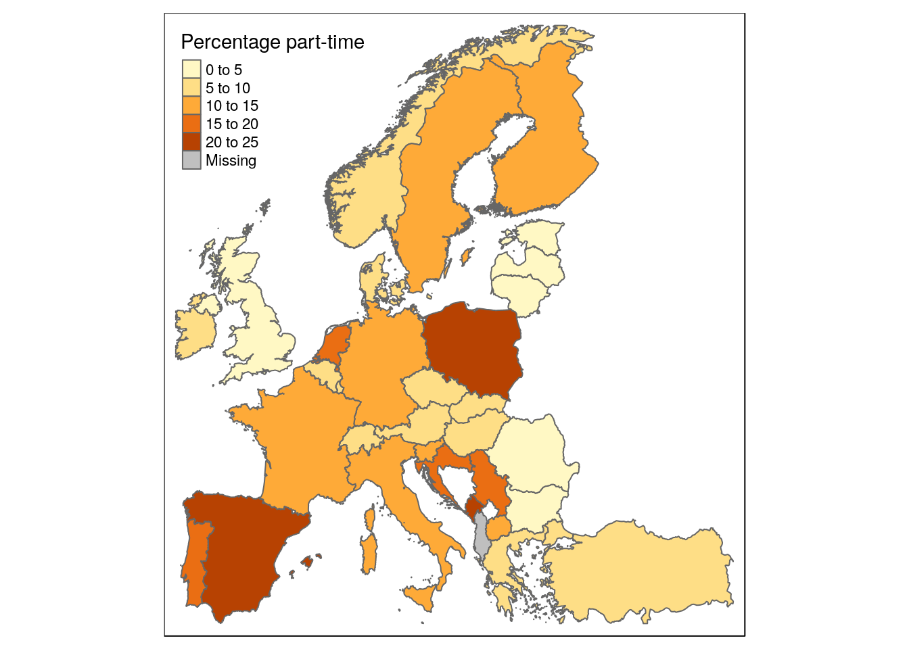

Adding data
We have a (spatial) dataframe with the blank map-information, now we want to add our data-of-interest. Two steps:
- Read in data-of-interst into R.
- Join data-of-interest with the spatial dataframe.
library(BelgiumMaps.StatBel)
library(tmap)
library(tmaptools)
library(sf)
library(dplyr)
library(readr)
library(readxl)
library(haven)Read in data-of-interest
Crucial: have a variable/column in your that contains the appropriate spatial identifier. E.g. NIS-code, NUTS-code, etc.
How to read in your data depends on the format, three recommended R-packages should cover mosts posibilities:
- readr: read/write plain text formats such as CSV, TXT, etc.
- readxl: read in Excel-files (.xlsx, .xls).
- haven: read/write datasets from SAS, SPSS, Stata.
# read in Belfius socio-economic municipality typology
data_muni <- read_excel('data/muni_typology.xlsx') # Excel
data_muni <- read_sas('data/muni_typology.sas7bdat') # SAS
data_muni <- read_dta('data/muni_typology.dta') # Stata
data_muni <- read_sav('data/muni_typology.sav') # SPSS
# CSV
data_muni <- read_csv(
file = 'data/muni_typology.csv',
col_types = cols(.default = col_character())) # explicit: all stringsJoin spatial data and data-of interest
Recommended options:
- general dataframe-join functions from dplyr:
left_join(). - map-specific helper function from tmaptools:
append_data().
# option 1 (dplyr):
library(dplyr)
data <- left_join(map_data, data_of_interest, by = "identifier")
data <- left_join(map_data, data_of_interest, by = c("map_identifier" = "data_identifier"))# option 2 (maptools):
library(tmaptools)
data <- append_data(map_data, data_of_interest,
key.shp = "map_identifier", key.data = "data_identifier")Examples
Ex. Municipal socio-economic typology
# load map data
data("BE_ADMIN_MUNTY")
map_muni <- st_as_sf(BE_ADMIN_MUNTY)
# load data-of-interest
data_muni <- read_csv('data/muni_typology.csv', col_types = cols(.default = col_character()))
# join with left_join()
muni <- left_join(map_muni, data_muni, by = c('CD_MUNTY_REFNIS' = 'gemeente_nis_code'))qtm(muni, fill = 'hoofdcluster_lbl', fill.title = 'Socio-economic cluster')
Ex. Part-time workers in the EU
# Read Eurostat data on percentage of part-time employment
worktime_data <- read_excel('data/eurostat_workingtime_2017.xlsx')# alternatively, fetch this data directly:
library(eurostat)
worktime_data <- get_eurostat('lfsi_pt_a') %>%
filter(age == 'Y20-64',
worktime == 'TEMP',
sex == 'T',
time == '2017-01-01',
unit == 'PC_EMP')# load EU NUTS0 (country) map data directly from Eurostat
map_data <- get_eurostat_geospatial(
resolution = "60", # detail
nuts_level = "0") # NUTS 0-3
# crop map data to "mainland" EU
map_data <- st_crop(map_data, c(xmin=-10, xmax=45, ymin=36, ymax=71))# join map and workingtime data in one dataframe
worktime <- left_join(map_data, worktime_data, by = c('CNTR_CODE' = 'geo'))qtm(worktime, fill = 'values', fill.title = 'Percentage part-time')
Tip: Use the R countrycode package to convert names, codes, etc. before merging. Contains 30+ different country coding schemes, and to 600+ variants of country names in different languages and formats.
library(countrycode)
countrycode(worktime$NUTS_ID, 'eurostat', 'ecb') # official ECB code## [1] "BG" "CH" "AL" "CZ" "BE" "AT" "DE" "DK" "EE" "GR" "ES" "FI" "HR" "FR"
## [15] "HU" "IE" "IT" "LI" "LT" "LU" "LV" "ME" "MK" "MT" "NL" "NO" "PL" "PT"
## [29] "RO" "RS" "SE" "SI" "SK" "TR" "GB"countrycode(worktime$NUTS_ID, 'eurostat', 'un.name.fr') # full UN name in FR## [1] "Bulgarie"
## [2] "Suisse"
## [3] "Albanie"
## [4] "République tchèque"
## [5] "Belgique"
## [6] "Autriche"
## [7] "Allemagne"
## [8] "Danemark"
## [9] "Estonie"
## [10] "Grèce"
## [11] "Espagne"
## [12] "Finlande"
## [13] "Croatie"
## [14] "France"
## [15] "Hongrie"
## [16] "Irlande"
## [17] "Italie"
## [18] "Liechtenstein"
## [19] "Lituanie"
## [20] "Luxembourg"
## [21] "Lettonie"
## [22] "Monténégro"
## [23] "Ex-République yougoslave de Macédoine"
## [24] "Malte"
## [25] "Pays-Bas"
## [26] "Norvège"
## [27] "Pologne"
## [28] "Portugal"
## [29] "Roumanie"
## [30] "Serbie"
## [31] "Suède"
## [32] "Slovénie"
## [33] "Slovaquie"
## [34] "Turquie"
## [35] "Royaume-Uni de Grande-Bretagne et d'Irlande du Nord"